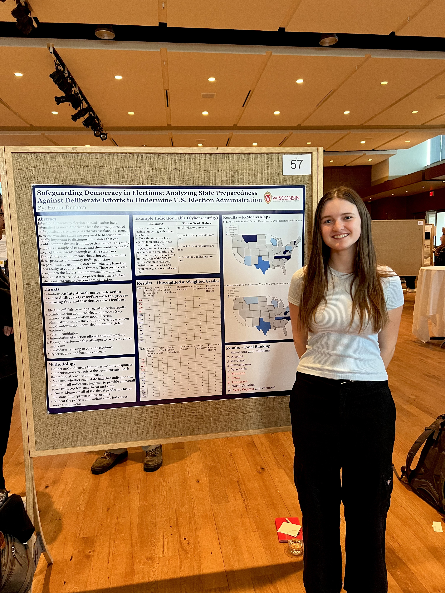

hdurham@mit.edu
Hi! My name is Honor Durham, and I've been working as a Research Support Associate at the MIT Election Data + Science Lab since June 2025. I graduated from the University of Wisconsin-Madison in May 2025 with two BAs in political science and data science. My research interests are in American and comparative politics. I enjoy researching and learning about American elections, democratic backsliding in modern democracies, and British politics. Outside of political science, I am passionate about podcasting, statistics, and R/Python.
